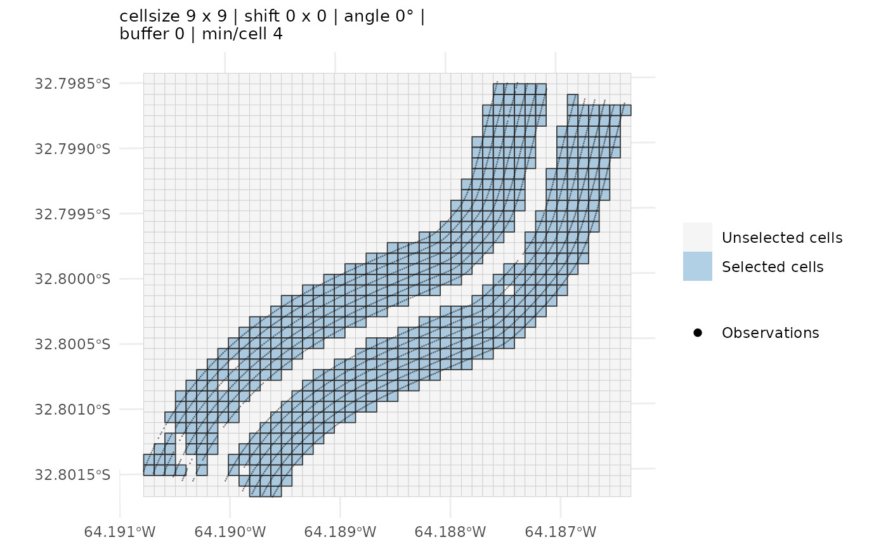
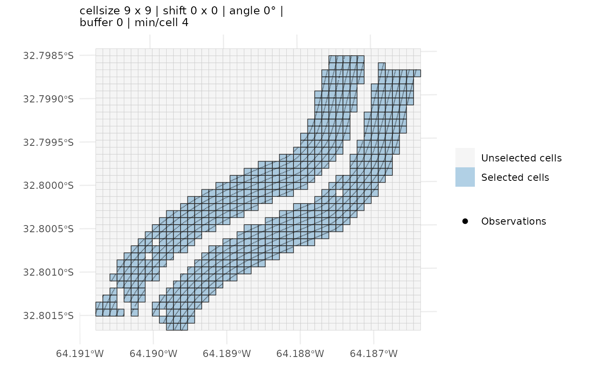
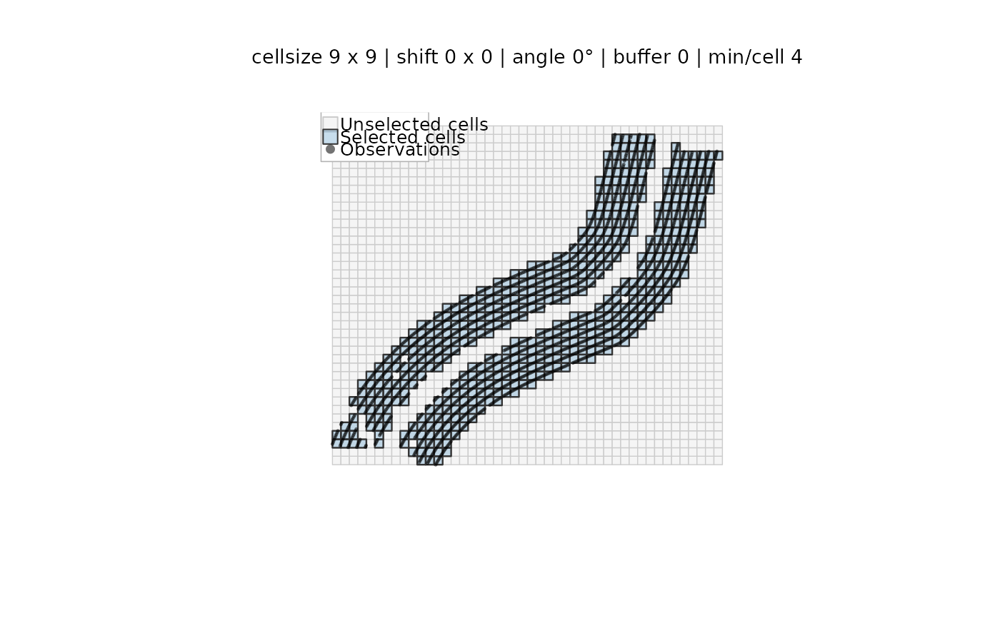
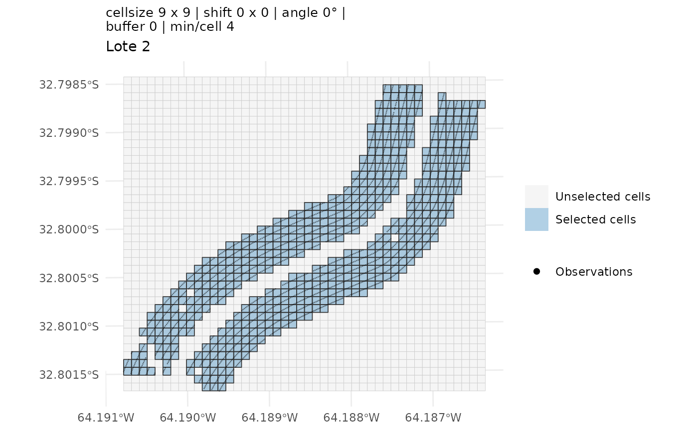

Draws the three layers that matter when tuning a grid, on one set of axes: the **full grid** in light grey, the **selected cells** (those that passed the single-treatment and `min_per_cell` filters) shaded and outlined in black, and the **observations** as points. Seeing the points against the cell boundaries is the quickest way to judge the effect of `cellsize`, `shift`, `angle_deg` and `buffer`.
Arguments
- x
Either an `ofe_grid` (from [make_ofe_grid()]) or an `ofemt_result` (from [ofemt()]) that was run with `keep_components = "light"` or `"full"`. With an `ofemt_result` every layer is taken from the object itself, so no extra arguments are needed; the points are only available under `keep_components = "full"`.
- data
Optional `sf` points to overlay. Rarely needed: the observations are taken from the object itself — `points_sel` for an `ofe_grid` built with `make_ofe_grid(return_points = TRUE)`, `points_joined` for an `ofemt_result` run with `keep_components = "full"`. Pass `data` when the object carries no points, or to override the stored ones.
- points
Logical; set to `FALSE` to skip the point layer. When `TRUE` (the default) and no observations are available, a message explains how to obtain them rather than silently drawing a grid without points.
- main
Plot title. Defaults to a one-line summary of the grid parameters, which is what makes successive calls comparable.
- legend
Logical; draw the legend. Default `TRUE`.
- legend_pos
Where to place the legend. Defaults to the engine's own sensible choice: `"right"` (outside the panel) for `"ggplot2"`, and `"topleft"` for `"base"`. Base-style keywords are translated for the ggplot2 engine, so `"bottomright"` works with either; `"none"` hides it.
- point_size
Size of the observation dots. Defaults to `0.15` for the ggplot2 engine and `0.35` (as `cex`) for the base engine. Yield-monitor data runs to tens of thousands of points, where the default can still read as a solid mass — lower it to see the cell boundaries underneath.
- engine
Which graphics system to draw with. `"ggplot2"` (the default) places the legend outside the plotting panel, so it can never sit on top of the data and the result does not depend on the device size. `"base"` uses base graphics and draws the legend inside the panel. If **ggplot2** is not installed the function falls back to `"base"` with a message.
- ...
Further arguments passed to the underlying [plot()] call for the full-grid layer. Base engine only; ignored by the ggplot2 engine.
Value
With `engine = "ggplot2"`, a `ggplot` object. In non-interactive contexts (e.g. scripts or inside `pdf()`), call `print()` on the returned object to render it. With `engine = "base"`, invisibly `NULL` — the function is called for the plot it draws.
Examples
# \donttest{
g <- make_ofe_grid(ofe_f2, x = "Treatment", cellsize = 9, min_per_cell = 4)
plot_grid_selection(g, data = ofe_f2)

plot(g, data = ofe_f2) # same thing
 res <- ofemt(ofe_f2, y = "Yield_tn", x = "Treatment", cellsize = 9,
keep_components = "full")
#> `grid` not provided: building one internally via `make_ofe_grid()`. Pass a pre-built `ofe_grid` to inspect or reuse the selection.
plot(res) # grid + selection + points, no extra args
res <- ofemt(ofe_f2, y = "Yield_tn", x = "Treatment", cellsize = 9,
keep_components = "full")
#> `grid` not provided: building one internally via `make_ofe_grid()`. Pass a pre-built `ofe_grid` to inspect or reuse the selection.
plot(res) # grid + selection + points, no extra args

# Base graphics instead, or a ggplot you keep customising
plot(res, engine = "base")

plot(res) + ggplot2::labs(subtitle = "Lote 2")

# }